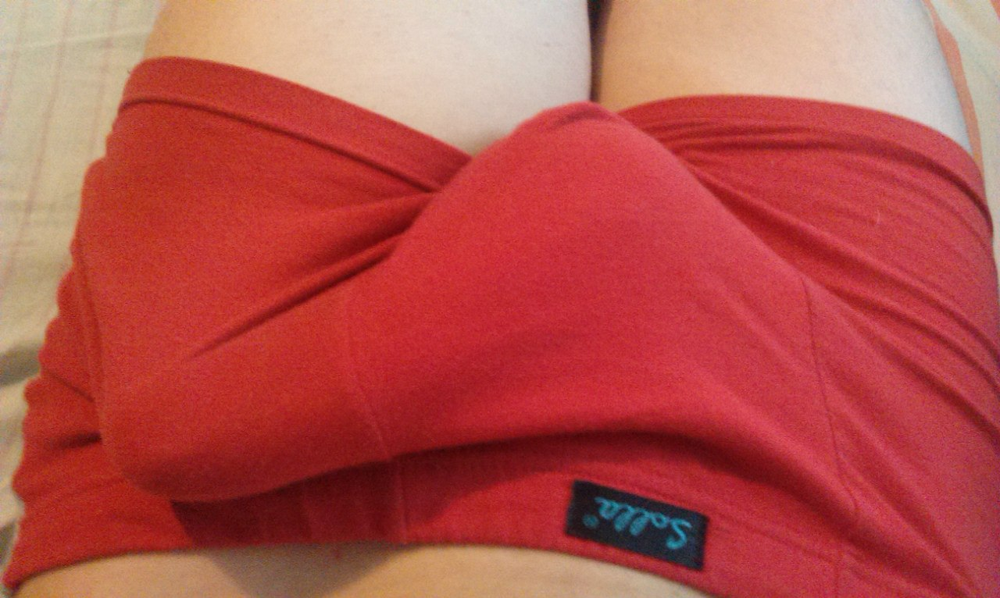

De először néhány számot szeretnénk ismertetni, amely meggyőzőbb minden szónál: kiderült, hogy a 35 éves korú férfiak esetében 10-ből kb. 7 időről-időre potencia problémákkal szembesül. Ez lehet részleges, vagy teljes mértékű erekció vesztés, idő előtti ejakuláció, az érzékenység elvesztése, a nemi aktus befejezésének lehetetlensége.
Az impotencia a válások, a veszekedések, a megcsalások oka!
Üdvözlök mindenkit!
Úgy döntöttem, hogy ma egy nagyon finom, ugyanakkor fontos témát vetek fel a férfi egészséget. Naponta számos kérést kapok arra, hogy meséljek a potencia helyreállításának modern szereiről.
Meglepő, de leggyakrabban nők teszik fel az ilyen kérdéseket, akik segíteni akarnak a férjeiknek megbirkózni ezzel a komoly problémával. A férfiak gyakran hajlamosak hosszú ideig szemet hunyni a problémára, és még akkor sem sietnek szakemberekhez, amikor a terápia szembetűnővé válik a számukra. Meg lehet érteni őket, hiszen senki sem akarja megvitatni az intim dolgait idegenekkel, még ha szakemberről is van szó. Ezért ma igyekezni fogok mesélni arról, hogyan lehet gyorsan és biztonságosan segíteni a potencia helyreállításában szakember felkeresése, vegyszerek és műtétek nélkül.
Sajnos, érdemes megjegyezni, hogy a problémák az ágyban a modern férfiaknál egyre gyakrabban jelennek meg. A kudarcok már 35 éves kor után előfordulnak, de néha még fiatalabb korban is. Ha nem gondoskodunk a saját egészségünktől, akkor, sajnos, az évekkel impotencia alakulhat ki. Általában néhány kudarc után a szerelmi téren, a férfiak elkezdenek különböző szintetikus potencinövelő készítményeket szedni, de nem érdemes így tenni! Igen, ezek valóban biztosítják az erős erekciót, de csak egy rövid időre. De nem oldják meg a problémát.
Lehet-e jó potencia bármilyen korban? Hogyan kerüljük el a vegyszereket?
Mindenkinek ismerősek olyan férfiak történetei, akik idősebb korban szereztek maguknak fiatal szeretőt vagy sokkal fiatalabb lányokat vettek feleségül. Sőt, az ilyen házasságokban még gyermekek is születnek, a férfiak a fellegekben járnak a boldogsától, fiatal feleségeik pedig büszkén suttognak férjeik sikereiról az ágyban. Hogyan sikerül ez nekik? Valóban potencianövelő szereket használnak? Nem hiszem! Lehetőségem volt feltenni ezt a finom kérdést ilyan férfiaknak, és tőlük hallottam először az termékről. Nagyjából természetes komponensekből áll (fűrészpálma kivonat, tőzegáfonya kivonat, csalán kivonat, Cink). Még nemrégiben ez az erőteljes szert csak külföldön lehetett megvásárolni és nagyon sok pénzért, de most elérhetővé vált mindenki számára és eközben nem veszített minőségéből.
A Kelet-Európában sikerült elindítani egy programot, amelynek a célja, hogy minden embernek lehetősége legyen arra, hogy megoldhassa a potenciával kapcsolatos problémáját, ameddig az nem nőtte át magát nehezebb formájúvá, a pénzügyi helyzettől függetlenül. Ezen program keretén belül az kedvezményes áron kapható!
Az akció 2022.01.25-ig tart bezárólag! A készítmény megszerzéséhez elegendő megadnia a nevét (minden bizalmas), valamint a telefonszámát a kapcsolattartáshoz a termék hivatalos weboldalán.
A Kelet-Európában történő értékesítés beindítása előtt az számos vizsgálaton esett át, amelyeket az Európai Urológiai Központban önkéntesek résztvételével végeztek el. Az eredmények nem csak az urológus és az andrológus szakembereket lepették meg, hanem magukat a fejlesztőket is.
Az valóban működik, de az analógjaitól eltérően gyors és hosszas hatást segít biztosítani, amely akár 2-3 órán át is megmarad. Most megnézzük azokat a fő hatásokat, amelyekre számítani lehet az alkalamzása során:
1. Segít az erekció erősítésében: a felizgulás azonnal bekövetkezhet, a stabil erekció általában az egész nemi aktus során megmarad;
2. Segít meghosszabbítani a nemi aktust: a nemi aktus ideje általában jelentősen nő, akár 2-3 órára. Ez fontos, mivel ha egy férfi nagyon gyorsan "feladja", akkor a nő nem kap teljes értékű élvezetet;
3. Jó hatással van a libidó növelésére: fontos az idősebb férfiak esetében, mert segít biztosítani rendszeres és erős vonzalmat;
4. Jótékony hatással van a sperma minőségére: a legtöbb esetben jelentősen nő a sperma minősége és mennyisége, amely az orgazmus során termelődik;
5. Segít biztosítani élénk orgazmusokat: segít jelentősen fokozni az orgazmust a férfiaknál, a nemi szerv érzékenységének fokozódása és a libidó erősödése miatt.
Gyakran megkérdeznek, hogy elérhető-e a jó potencia és a stabil erekció 50 év fölötti korban. Természetesen, igen! Sőt, ilyen korban a férfiak számára a rendszeres nemi élet normális! Többet mondok, még jóval 60 éves kor után is helyre lehet állítani a potenciát az olyan szerek segítségével, mint az , amelyet alkalmazva a szex akár órákon át is tarthat. Nagyon fontos, hogy a szer természetes és veszélytelen az egészségre nézve, akkor bármilyen korban használható. Emellett, az nagyon jó azon fiatal emberek számára is, akik problémákkal szembesültek az ágyban. Az ő esetükben a probléma gyakran pszichológiai szinten van, a magabiztosság hiánya vagy a tapasztalatlanság miatt. Az után az erős erekció még az izgalom és a stressz ellenére is megjelenhet!
Levonva a következtetéseket, szeretnék még egyszer az idősebb férfiakhoz fordulni, akiknek most fiatal feleségeik és barátnőik vannak. Ne engedjék, hogy bekövetkezzenek a potencia problémák, ne feledjék, hogy a szex és a kielégülés az ágyban nagyon fontos a nők számára, főként a fiatal hölgyek számára. Ha nem fognak rendszeresen és jó minőségben szeretkezni, akkor boldogtalanná fogják tenni a párjukat! A jövőben ez akár váláshoz vagy megcsaláshoz is vezethet.
Figyelem! Előfordulnak az hamisítványai eladásának esetei, amelyek nem hatékonyak! Az ilyen esetek egyre gyakoribbá válnak. Ezért olvasóink számára közzétettünk egy megrendelőlapot az készítményre, hogy közvetlenül a hivatalos szállítótól rendelhessék meg a terméket. A hivatalos weboldalon rendelve garantált a termék minőség.
Nonna Ligeti olvasói számára egy speciális akciót szervezett, amelynek keretein belül az kedvezményesen kapható. Az igénybe vételéhez nyomják meg az " megrendelése" gombot.

Hozzászólások: :(47/47)
Masztopátiám volt és a terápia mellett az orvos kifejezetten javasolta, hogy folytassak rendszeres nemi életet. De neki könnyű volt ezt mondani... Nem arról van szó, hogy nem akartam, de a férjem potenciája már régóta sántított. Nemi életet maximum havonta 1-2 alkalommal éltünk. Beszéltem vele, eldöntöttük, hogy igyekezni fogunk gyakrabban szeretkezni, de pár kudarc után még rosszabb lett minden. Még jó, hogy a barátnőm az mesélt, azonnal megrendeltem ezen a weboldalon, a férjem pedig azonnal elkezdte szedni. Most éjszakánként nem csak alszunk.:) El is felejtettem azt az érzést, amikor másnap szinte röpdösöl! Egyszóval ajánlom mindenkinek és ne mérgezzék magukat vegyszerekkel, ez a semmibe vezető út!
Nálunk a férjemmel éppen ellenkezőleg, mindig készen állt, hetente háromszor, vagy még gyakrabban. De valahogy véletlenül észrevettem, hogy valami potencianövelő készítményt szed! Képzelik? Nem mondott nekem semmit a problémáiról, én pedig azt gondoltam, hogy természet adott erős potenciát... Egyszóval összevesztünk, annál is inkább, hogy fájni kezdett a feje és a vérnyomása is ugrált! Kinek kell az öröm az ágyban ilyen áron??? Elkezdtük együtt keresni a természetes szereket és rakadtunk az termékre, köszönet Nonna Ligetinek, hogy mesélt róla! és akció is volt a weboldalon, úgyhogy dupla szerencsénk volt! akciósan vásároltuk meg! A férjem helyreállította a potenciáját, szerintem még fiatal korában sem volt ilyen kőkemény erekciója. Már fél év telt el, és hála Istennek nem volt semmi következménye!
Urológus szakember vagyok, és nagy tapasztalattal rendelkezem, szóval nem tudtam figyelmen kívül hagyni ezt a cikket. Nagyon örülök, hogy a cikk írója szóba hozta azt a fontos témát, amelyről általában az emberek nem szoktak beszélni. És nagyon örülök mindenkinek, akinek az segített. Én és kollégáim gyakran ajánljuk azoknak a férfiaknak, akik potenciára panaszkodnak. Szeretnék még egyszer a férfiakhoz fordulni és persze a hölgyekhez is, ne mérgezzé ka szervezetüket kémiai anyagokkal és ne engedjék, hogy szeretteik ezt tegyék!
A férjemmel nagyon régen szereztünk tudmást erről a szerről, először 40 éves korában kezdődtek problémák nála és az terméket akkor vásároltuk meg, amikor nyaralni voltunk külföldön. Sajnáltuk, hogy csak egy csomagot vettünk, mivel az eredmény fölülmúlt minden várakozást!
Bizonyára mindenki ismeri a történetemet, sokat írtak rólam az Interneten. Csak azért írok, hogy köszönetet mondjak Nonnának azért, hogy mesélt erről az erőteljes készítményről az egész világnak. Én is írtam róla a vloggomban, de engem kevesen olvasnak. Rövidre fogva, 60 évesen feleségül vettem egy 20 éves szépséget! Az örömnek nem volt határa, de nagyon hamar megértettem, hogy az ágyban már nem birom tartani az iramot. Egy fiatal nőnek szükségletei vannak, emiatt veszekedni kezdtünk... Szóval, ha nincs a , akkor ez a házasság aligha maradt volna meg. Most ismét FÉRFINAK érzem magamat! És igen! Ismét férfi vagyok!
Az valóban klassz cucc, a barátom ajánlotta nekem. Kiderült, hogy vagyok egyedül, mások is szenvednek gyenge potenciától. A barátom azt mondta, hogy potencinövelő szerek nélkül nem tudott szexelni. Aztán végigcsinált egy kúrát , és Úgy érezett, mintha újjászületett volna. Én is kipróbáltam. A potenciám valóban nagyon gyorsan helyreállt és erősebb lett, mint valaha, remélem, hogy így is marad)) emberek, rendeljétek meg, ameddig még van készleten és tart az akció

Megrendeltem az terméket a hivatalos weboldalon, a hatás erős és még tart, remélem így is marad! Csak azt akarom mondani azoknak, akik meg fogják rendelni, hogy ez nem vegyi készítmény, hanem természetes kivonatokat tartalmazó szer. A hatás gyors és hosszas. Tartós hatás, azt modnják, hogy akár 5 órán át is tart.
Elkezdtem szedni az terméket a feleségem tudta nélkül, nem akartam hogy tudja, hogy problémáim vannak. Az eredmény egyszerűen megdöbbentett! Igen, az erekció hamar bekövetkezik és nagyon erős! Képzelik csak el, hogyan sokkalta ez a feleségemet! Hiszen évek óta ismer! Alig bírtam megnyugtatni :) A nemi életünk sokkal jobb lett, a feleségem talán soha nem élvezett még el így! Korábban csak akkor volt orgazmusa, ha szex közben kényeztettem még, de most csak a péniszemtől élvez el!
Lóránt, én is észrevettem a készítmény hatását! A férjem azonnal értékelte a különbséget. Eddig úgy tartottam, hogy a méretnek nincs különösebb jelentősége... Hát tévedtem! Most valóban fantasztikus orgazmusaim vannak, de korábban ritkán volt így... Most úgy vetem rá magamat a férjemre, mint egy éhes lány, rendesen szégyellem magamat...
Én is megosztom az örömömet. A potenciám helyreállt, ismét élvezem az életet és már nem aggódom az korom miatt. Egy férfi férfi kell, hogy maradjon. Ha nem élvezzük az életet és nem szerzünk örömet a párunknak, akkor miért élni?
Nem jutok szóhoz, de valóban MŰKÖDIK! Nemrég tartottam egy szex-marafont, majdnem 3 órán át hemperegtem egy csajjal. Persze kisebb szünetekkel ))) Háromszor elégítettem ki, neki tetszett! És észrevettem azt is, hogy miután elélvezek, nagyon hamar helyreállok, 5-10 perc és ismét feláll! Persze, csak ha szép lány van mellettem. Ó, eszembe jutott és máris felizgultam, ma hamarabb megyek el a munkából...
Nagyon féltem ezektől a szerektől, miután megfájdult a szívem az egyik reklámozott termék szedése után. De végül mégis úgy döntöttem, hogy kipróbálom, mivel az természetes összetevőkből készült el. A szállító weboldalán rábukkantam egy akcióra, ezért olcsón beszereztem. És valóban, nem fáj a fejem, a szívem nem ver őrülten. Úgyhogy mindenkinek ajánlom, és elmondhatom, hogy az 100-szor jobb az analógjainál az erekció erejét és hosszát tekintve egyaránt!

A férjemnek nagyon segített! Nem is magamat sajnáltam, bár hiányzott a rendszeres szex, hanem inkább őt. Láttam, hogy állandóan depressziós, főként amikor próbálkoztunk és nem sikerült semmi. Most a potenciája normális és teljesen már ember lett, vidám, életörömmel teli!!!
Köszönöm, az túlzás nélkül megmentette a családomat! És mellesleg jó spórolás is. Az analógok sokba kerülnek, mi pedig sokat költöttünk rá az utóbbi években.
Emberek, mondja már meg valaki, hol lehet megvenni? A gyógyszertárakban nem kapható. Nem szeretnék hamisítványt venni, mivel értem, hogy akkor semmilyen hatás nem lesz.
A cikkben azt írták, hogy az CSAK a hivatalos weboldalon vásárolható meg, hogy ne tévedjenek, egyszerűen kattintsanak az " megrendelése" gombra kicsit lentebb! Ezenkívül a cikk szerzőjenek sikerült megállapodni a gyártóval a különleges akciót illetően, de már csak pár napig fog tartani, ezért siessenek a megrendeléssel! És óvakodjanak a hamisítványoktól.